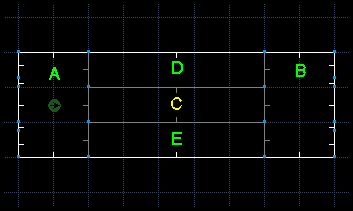
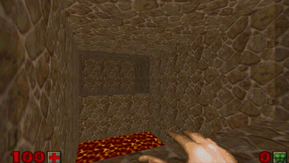
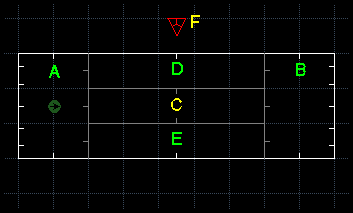
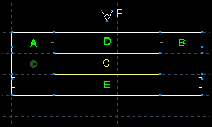
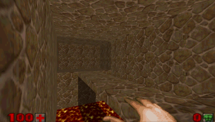

Ok, you want to put a 3D floor into your level?
First, I want you to understand that I am not here to teach anyone how to use their editor of choice. You need to understand how to tag a line to a sector and how to set a linedef type. Please view the Map Editing Tutorial for more info.
Let's get started.
First, build a small, 5 sector level to match the example image. Screenshots re-taken in Doom Builder. heh

Sectors A and B should have a floor height of 128, a ceiling height of 256, and a light level of 176. Sectors C, D, and E, should have a ceiling height of 256, a floor height of 0, a light level of 255 and make the floor texture something painful (like lava or nukage).
Now, texture everything in and add a player start to your map if you would like to test out what you've made so far. It should look something like this:

OK, so now we need a bridge across the lava. Now we could just raise the floor of sector C to accommodate our marine. However, this method of creating a bridge really sucks because it doesn't allow for a passage UNDER the bridge, so we are going to create a 3D bridge to get us across.
First, we need to make a control sector. This is a small, off map sector that will contain the textures and attributes we'll need to make a 3D structure. The size and shape of this sector does not matter.
NOTE: I usually make my control sectors a triangle and "point" them at whatever they effect. It makes them easier to keep track of.

Now set sector F's floor height to 112 and it's ceiling height to 128, and set both floor and ceiling textures to RROCK11, and set F's light level to 176.
Then, select one of the linedefs, set the line special to 281 (281 is the linedef code for a solid, opaque, 3D floor) and tag it to sector C.
Now sector F will be a "model" for a 3D floor in sector C. Sector F's floor will be the model for the "bottom" of the 3D floor, and it's height and texture will be used accordingly.

The same applies for the ceiling of sector F, it's ceiling texture and height will be used. The texture for the "sides" of the 3D floor will be the middle texture of the linedef with the 281 special.
(I used BSTONE1 for the wall texture) and finally, the light level of sector F will be the light of the shadow it casts.

What's left? Nothing! Run j00r map!
Here is the tutorial wad: 3dfloor.wad
See 3D floor Linetypes for the various 3d line types that can be used with Doom Legacy.